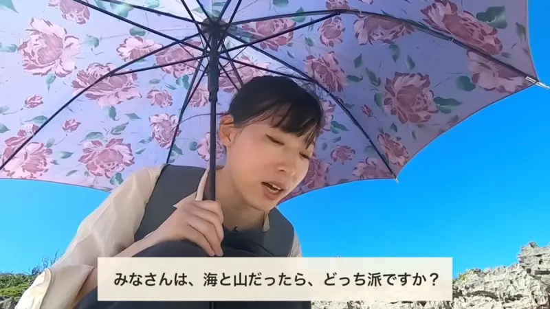
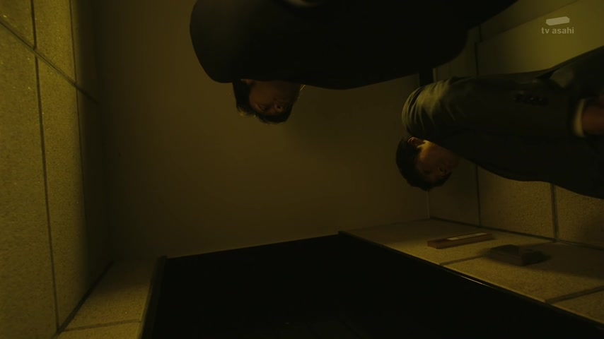
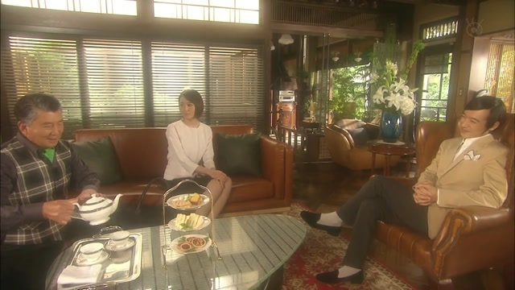

どちら・どっち
| Polite | どちら |
|---|---|
| Casual | どっち |
Same meaning: "which one (of two)". Only the politeness changes.

YouTube · video
みなさんは、海と山だったら、どっち派ですか？
"Everyone, sea or mountains: which are you more into?"
どっち means "which one", picking between two things. On this card: the sea or the mountains (派 = "camp, type").
どちら is the polite version, どっち the casual one. People mix them, like here: casual どっち, polite です.
どちら is also the polite way to ask "where" or "which way": 駅はどちらですか？
Examples
Holding up two shirts for a friend.
どっちがいい？
"Which one is better?"
CasualA waiter at a café.
コーヒーと紅茶、どちらがいいですか？
"Coffee or tea, which would you like?"
PoliteLost, asking a stranger.
駅はどちらですか？
"Which way is the station?"
A politer どこ.
PoliteSmall talk with a friend.
犬と猫、どっちが好き？
"Dogs or cats, which do you like?"
CasualWith and without
どれがいい？
"Which one do you want?" From a whole row of things.
赤と青、どっちがいい？
"Red or blue, which do you want?" Only two to choose from.
Sentence mining
Shirokuma Cafe · Episode 9
で お届けはどちらまで
"And where shall we deliver it to?"
どちら as a polite どこ, the way shop staff talk. まで = "to, as far as".

Border · Episode 2
どちら様ですか？
"Who is it?"
どちら様: the polite "who?", at the door or on the phone.
Million Yen Woman · Episode 9
ご遺骨はどちらに？
"Where are his ashes?"
ご遺骨 ("his ashes", polite) + は + どちら + に: "where are they?". どちら is the polite どこ.

Legal High · Episode 11
黛先生は今 どちらの事務所で？
"Which firm are you at now, Mayuzumi-sensei?"
どちら + の + 事務所 ("office, firm") = "which firm?". どちらの is the polite どの.
Death Note · Episode 10
ではどちらにするか決めてください。
"Then please decide which it will be."
どちら + に + する ("decide on") = "decide which one". か makes it "whether this or that".
Shirokuma Cafe · Episode 9
で、お届けはどちらまで？
"So, where should we deliver it?"
お届け ("delivery") + は + どちらまで ("as far as where?"): shop staff asking for the address.
I am Mita, Your Housekeeper · Episode 11
どっちか選びなさい。
"Pick one of the two."
どっち (casual どちら) + か = "one of the two". 選びなさい = "choose!", an order.